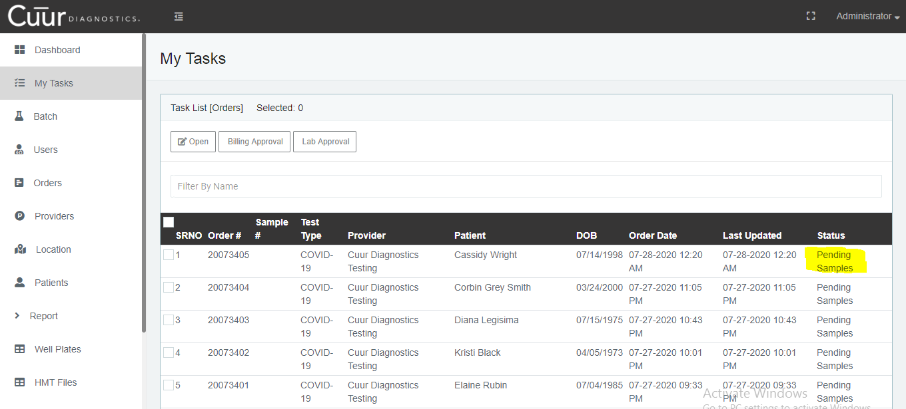
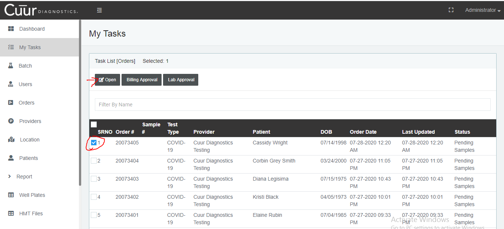
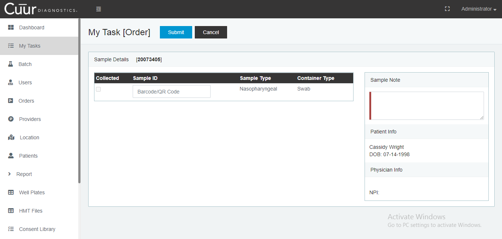
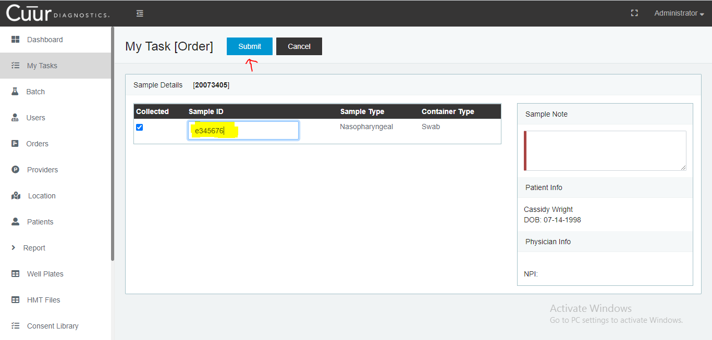
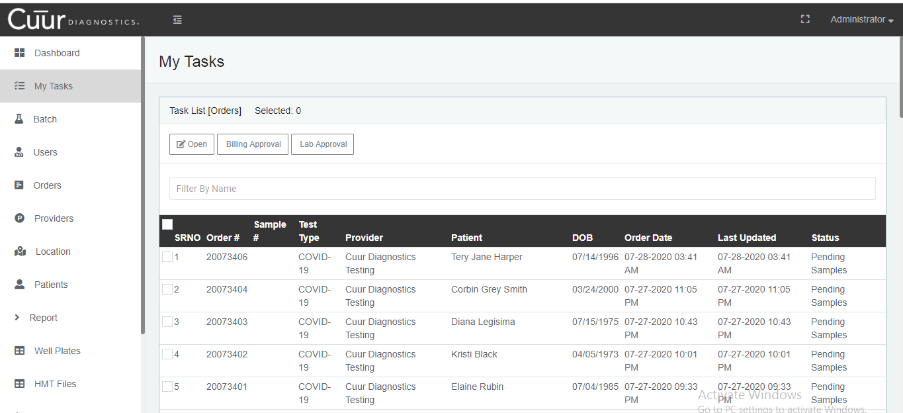

Once the user login with their credentials follow these steps:
- Click the “My Task” button from the left sidebar and all Pending Samples will be seen under “My Task” list

- For collecting the Samples:
- Place the checkmark in the box in front of the order # on the left-hand side, and the “Open” button will be visible on top under Task List.
- Click that “Open” button.

- The “My Task [Order]” page will be opened.

- Scan the Barcode/QR from the sample, and code will appear under “Sample ID” field.
- click the Submit button on top next to the “My Task [Order]” button.

- After submitting, it won’t be available in the “My Tasks” list, but it will be reviewed from the Order button.
